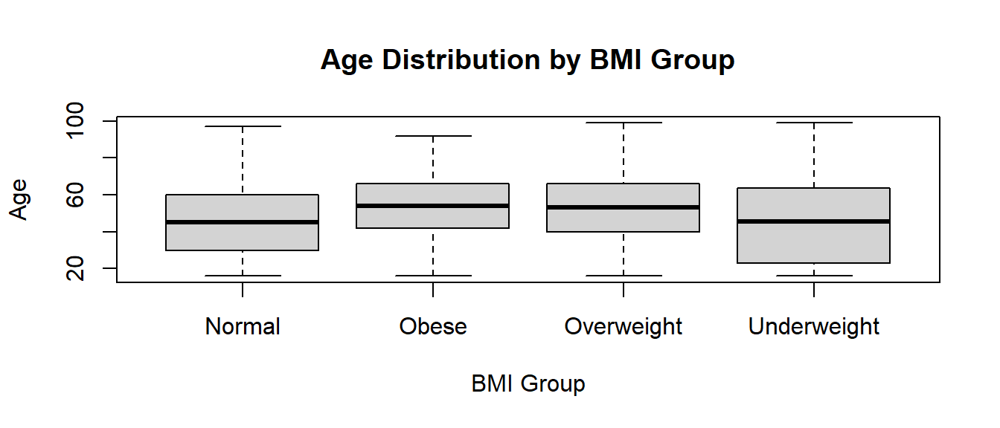
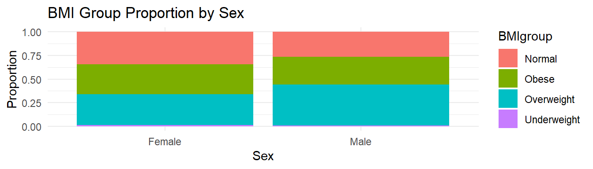

Analysis of Obesity Prevalence and Influencing Factors in the 2013–2016 Scottish Health Surveys
Group 6
Introduction
Obesity has become a significant public health concern in Scotland, raising worries about the rising burden of chronic diseases and healthcare costs. The 2013–2016 Scottish Health Surveys provide valuable insights into socio-economic and lifestyle factors that may influence obesity prevalence, including age, sex, education, and survey year. This project seeks to determine whether the prevalence of obesity has changed over time and to explore how demographic and socio-economic factors relate to weight classification. By analyzing these trends, we can gain a deeper understanding of the drivers behind obesity and inform targeted public health interventions.
Exploratory data analysis
These statistics can be illustrated in Figure 1 below. We can also see that there are no significant change in the proportion of obese individuals between 2013 and 2016.

Next, we want to explore the relationship between Age and BMIgroup.In Figure 2 shows that the age distribution varies significantly across different BMI groups. Generally, obese individuals tend to be older, whereas the underweight group is comparatively younger. This indicates age is an important factor associated with BMI categories.

Next, we analyse the relationship between BMI Group Proportion by Sex. In Figure 3 we see there are noticeable differences in BMI group proportions between males and females. Males appear slightly more likely to be overweight, whereas females show relatively higher proportions in the normal and obese categories. Gender thus influences BMI distribution patterns.

To assess the impact of socio-economic status, we look at BMI distributions across education levels. Figure 4 shows that individuals with higher education levels (e.g., degrees) tend to have higher proportions of normal weight and lower obesity rates. In contrast, individuals with no qualifications show higher rates of obesity. This highlights how education—and by extension, socio-economic status—may influence obesity.

In summary, our exploratory analysis reveals that while overall BMI trends remained stable between 2013 and 2016, there are notable differences in BMI distributions based on age, gender, socio-economic status, and lifestyle factors. Older age, lower education, and poor dietary habits are associated with higher obesity rates, while gender differences also influence BMI group proportions.
Formal data analysis
Table showing Chi-squared results
| X-squared | df | p-value |
|---|---|---|
| 0.11404 | 1 | 0.7356 |
Table showing Pearson’s Chi-squared results
| X-squared | df | p-value |
|---|---|---|
| 0.22577 | 3 | 0.9733 |
| obese binary | |||
|---|---|---|---|
| Predictors | Odds Ratios | CI | p |
| (Intercept) | 0.00 | 0.00 – 131922148920640185303040.00 | 0.717 |
| Year | 1.01 | 0.97 – 1.04 | 0.736 |
The formal analysis of obesity prevalence trends in Scotland, using data from the Scottish Health Survey, reveals no statistically significant change over the surveyed years (2013–2016). The Chi-squared Test for Trend in Proportions (X²=0.114, p=0.736) and Pearson’s Chi-squared Test (X²=0.226, p=0.973) both fail to reject the null hypothesis, indicating no evidence of a linear trend or overall difference in obesity proportions across the years. This conclusion is further supported by the logistic regression results, where the “Year” variable shows an odds ratio of 1.01 (95% CI: 0.97–1.04, p=0.736), suggesting that each passing year was associated with a non-significant change in obesity odds. The intercept (OR=0.43, p<0.001) reflects the baseline odds of obesity but does not inform temporal trends. Overall, these results demonstrate that obesity prevalence in Scotland remained stable during the study period, with no meaningful increase or decrease detected.
Question 2
To answer the second question, we use linear regression to find out if age, gender, socio-economic status, or lifestyle factors are significant predictors for obesity.
We start by looking at if age is a significant predictor for a persons BMI group. We are fitting the following linear model:
\[ logit(\pi) = \beta_0 + \beta_1 x_i + \epsilon_i, ~~~~~ \epsilon_i \sim N(0, \sigma^2), ~~~~~ i = 1, ... , 14017 \]
Here, \(\pi\) is the probability that the individual is obese, \(x_i\) is the age of the ith individual, and \(\beta_0\), \(\beta_1\) are regression coefficients. We are using the logit link function.
| BM Igroup | |||
|---|---|---|---|
| Predictors | Odds Ratios | CI | p |
| (Intercept) | 4.33 | 3.86 – 4.86 | <0.001 |
| Age | 0.99 | 0.99 – 0.99 | <0.001 |
As seen from the p-value, we can infer that age is a significant predictor for a persons BMI group. As someones age increases by one year, the odds of the person being obese increase by a factor of 0.99.
We now check the assumptions of our model, to find out if the model is valid.

There is no issues that can be seen in the posterior predictive check, influential observations graph, and the uniformity of residuals graph. There does appear to be a large amount of points falling outside the error bounds in the binned residuals graph. We would expect about 95% of points to fall within the error bounds if the model is true. As there is a large amount of points plotted it is hard to tell if there is 95% within the error bounds, as there may be overlap. However, it appears to be good enough.
We now look at sex to consider if it is significant through fitting the following model:
\[ logit(\pi) = \beta_0 + \beta_1 x_i + \epsilon_i, ~~~~~ \epsilon_i \sim N(0, \sigma^2), ~~~~~ i = 1, ... , 14017 \]
Where \(x_i\) is an indicator variable taking the value 0 if the individual is a male and the value 1 if the individual is a female.
| BM Igroup | |||
|---|---|---|---|
| Predictors | Odds Ratios | CI | p |
| (Intercept) | 2.44 | 2.31 – 2.57 | <0.001 |
| Sex [Female] | 0.89 | 0.83 – 0.96 | 0.002 |
As seen from table 2, the p-value indicates that sex is a significant predictor at the 5% significance level. Furthermore, the odds ratio for being obese increase by 0.89 for females.
Again, we check our model assumptions to find out if our results are valid.

The plots in figure 2 look good enough. There may be issues with the binned residuals plot, however the issue likely stems from sex being a factor with 2 levels giving us only 2 points.
We now look at education to consider if there is a difference in obesity based on socio-economic factors. We fit the following model:
\[ logit(\pi) = \beta_0 + \beta_1 x_i + \beta_2 x_j + \beta_3 x_k + \beta_4 x_l +\beta_5 x_m + \beta_6 x_n + \epsilon_i, ~~~~~ \epsilon_i \sim N(0, \sigma^2), ~~~~~ i = 1, ... , 14017 \] Where \(x_i\) through \(x_n\) are indicator variables taking the value 1 if they have that level of education and 0 if they do not. The \(\beta_0\) term refers to the reference level which is having a degree.
| BM Igroup | |||
|---|---|---|---|
| Predictors | Odds Ratios | CI | p |
| (Intercept) | 3.05 | 2.85 – 3.26 | <0.001 |
| Education [Higher grade or equiv] |
0.84 | 0.75 – 0.94 | 0.003 |
| Education [HNC/D or equiv] |
0.72 | 0.64 – 0.82 | <0.001 |
| Education [No qualifications] |
0.53 | 0.48 – 0.59 | <0.001 |
| Education [Other school level] |
0.60 | 0.51 – 0.70 | <0.001 |
| Education [Standard grade or equiv] |
0.67 | 0.60 – 0.74 | <0.001 |
As seen from table 3, all the levels of education are considered significant predictors of the persons BMI group. The odds of a person being obese is 3.05 for a person with a degree, then increases by 0.53-0.84 depending on qualification level.
Again, we have to check the model assumptions.

The interpretation of figure 3 is much like the previous figures. The only graph that leaves cause for concern is the binned residuals graph, but again, because it is a factor, it is always going to not work as well as a continuous variable. Thus, the model is appropriate.
Conclusions
The Scottish Health Survey data shows no significant change in obesity prevalence between 2013 and 2016, with stable BMI proportions. However, demographic and socio-economic factors influence obesity distribution: older individuals are more likely obese, while younger ones are often underweight. Males have higher overweight rates, whereas females show greater proportions in normal and obese categories. Higher education correlates with lower obesity, while fewer qualifications link to higher obesity. Despite stable overall rates, age, gender, and education significantly impact obesity.